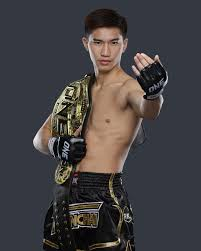

tawanchai
info
- weitght limit: 69,9 KG
- Height: 180 cm
- Counrty:Thailand
- Age:24 y
About Tawanchai PK Saenchai
ONE Featherweight Muay Thai World Champion Tawanchai PK Saenchai has blown away both fans and opponents since joining ONE Championship. Regarded as one of the brightest stars of his generation, the young striker from Bangkok went on the warpath in ONE Championship and ultimately claimed gold in the featherweight Muay Thai division.
After watching some Muay Thai fights at Thepprasit Stadium in Pattaya, Thailand, when he was 8 years old, Tawanchai was inspired to learn “the art of eight limbs” and quickly found himself competing in the sport. He tore up the local scene, earned bigger paydays, and eventually made his debut at the historic Lumpinee Stadium when he was 14.
n 2018, Tawanchai reached his first peak as a Muay Thai fighter when he won the Lumpinee Stadium, Sports Authority of Thailand, and Siam Kela Fighter of the Year awards. Just three years later, Tawanchai joined ONE Championship and brought his skills to the global stage in search of his first World Title. The Pattaya native made a splash in his promotional debut when he knocked out Sean Clancy with a head kick in May 2021 and then he fought multiple-time Kickboxing World Champion Sitthichai Sitsongpeenong in a bout for the ages.
In his featherweight debut, Tawanchai displayed his firebrand style of fighting. He overwhelmed Niclas Larsen with his relentless pace, technical skills, and destructive power, eventually finishing him with a crisp two-punch combination in the second round. That dominant win propelled Tawanchai to the biggest opportunity of his career – a shot at longtime ONE Featherweight Muay Thai World Champion Petchmorakot Petchyindee. Then at ONE 161, the Thai superstar dethroned Petchmorakot with an impressive five-round display, claiming the divisional gold with a unanimous decision victory.